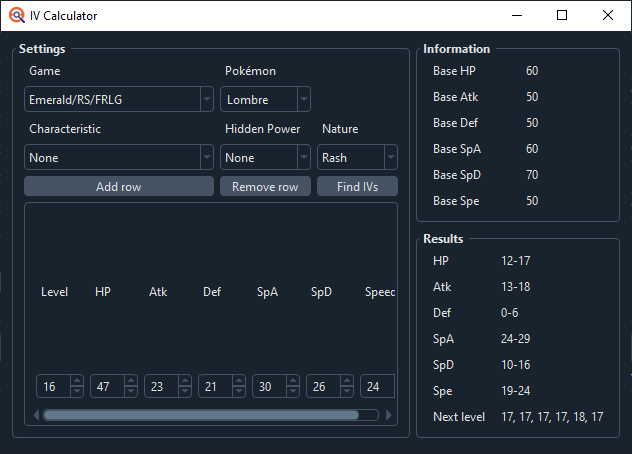

Guide Navigation
This guide will cover RNG manipulation of wild Pokémon using Sweet Scent in Pokémon Ruby, Sapphire, and Emerald versions. This is a fairly easy way to obtain shiny Pokémon or Pokémon with relatively good IVs. For this guide, I will assume that you are not using glitches.
While you can use the Painting and Battle Video methods alongside this to get better nature and IV spreads, those are covered in separate guides. You can also encounter Latios or Latias while using Sweet Scent, however, they can not be manipulated using this method, and are also covered in a separate guide.
Guides:
PokéFinder Guide: This will help you set up and use PokéFinder.
EonTimer Guide: This will help you determine what EonTimer settings you should use.
TID/SID Guide (Optional): You will need to know your TID and SID in order to RNG shiny Pokémon, and the TID/SID guide will help you determine your SID if you are either starting a new game or already have a shiny Pokémon.
Tools:
In-game:The first thing you should do is determine what you want to catch. For the sake of this guide I will be attempting to catch a Shiny Swablu in Emerald. Open up PokéFinder, and under the “Gen 3” tab, select “Wild”. It should pull up a window that looks like this:
Don’t worry if your PokéFinder looks slightly different from mine, I’m using the redesign branch and I will point out any differences during the guide.
Now, let’s look at the RNG Info. Start by selecting the profile for your game. Next, under “Method” you will want to select Method Wild 1 if you are playing on Ruby or Sapphire, Method Wild 2 if you are playing in Emerald, or Method Wild 4 if you are playing on Pokémon Box RS (These are Method H1, H2 and H4 in the main branch) While it is possible to hit any of the Methods on any game, these are the most common. For “Seed” put in 5A0 for Ruby and Sapphire, or leave it blank (0) for Emerald. Leave the “Lead”, “Initial Advances”, “Max Advances”, and “Delay” fields alone for now. Since I’m playing on Emerald, I will select Method H2 and seed 0.
Now in the “Settings” box, under “Encounter” select either “Grass” or “Surfing”, then select your location and target Pokémon. In my case I will be looking in the Grass on Route 114 for Swablu.
Now you can start selecting filters. For IVs, the left column is the minimum IV you want in that stat, and the right column is the maximum. For Abilities, if you are using the main branch of PokéFinder and you need to know which is Ability 0 or Ability 1, go to Serebii or Bulbapedia, and whichever Ability is listed first should be Ability 0, and the second Ability is Ability 1. If you want to select a Gender in the main branch, make sure to also specify the Gender Ratio, which should also be listed on Bulbapedia. Under “Shiny”, the only difference between “Star” and “Square” is how the sparkles will appear if the Pokémon is transferred to Sword and Shield or beyond, so if you want a shiny Pokémon and you don’t care about transferring, just select “Star/Square”. The Encounter Slot section was filled out when you selected your target Pokémon, so leave it alone. Hidden Power and Nature should be self-explanatory.
For now, all I care about is any Shiny, so I’m selecting Star/Square.
Keep in mind that if you select too many filters you won’t get any results. For IVs, you should only search for 1-2 perfect stats (30-31) and a few good natures, or above average (16-31) in several stats and one preferred nature. Also note that Hidden Power is dependent on IVs. Also, the rarer your target Pokémon, the fewer results will be available. Finally, searching for a shiny Pokémon with good stats is nearly impossible with this method.
Now hit the Generate button. You should see several results show up like this:
If you do not see any results, you can try removing some of the filters you had set up, or maybe increasing the Max Advances. Now you can choose any of these results as your target. It doesn’t necessarily have to be the first one listed, and if you see one that you like better, feel free to go for it. Keep in mind, though, that the higher the advances, the longer you will have to wait for it. I’m going to aim for Advance 14179.
Now let’s take a look at the “Lead” selection. If you didn’t know, in Pokémon Emerald, several abilities were given new out of battle effects when placed in the front of your party. Synchronize and Cute Charm got a 50% chance to make wild Pokémon have the same Nature or the opposite Gender, respectively. They do this by jumping to the nearest matching Advance. This can be used to make your target appear more often, or have a spread appear for a different encounter slot. Since there are more Natures than Genders, I recommend using Synchronize over Cute Charm. I didn’t end up using this, but if I did, because my target was a Bashful nature, I would select Synchronize: Bashful as my lead in PokéFinder, and press Generate again.
You can now choose to target any of these new results, but I recommend choosing one in the middle of a cluster, if possible.
Now, open up EonTimer, and go to the Gen 3 tab. It should look like this:
Click the settings cog in the lower left corner, and in the "Timer" Tab, make sure to select the console you're playing on. If it's a GBA, GBA-Sp, GameboyPlayer, or Gameboy Micro, pick GBA. If it's a DS, DSLite, or 3DS VC, select NDS-GBA:
Put the advances for your target in the “Target Frame” box. Leave everything else alone for the time being.
Now all you need to do is get set up in-game. Start by putting your Sweet Scent Pokémon into your party, then head to your target’s location. If you’re in a cave, move away from the entrance tile, otherwise Sweet Scent will fail and you will be very sad. If you’re playing in Emerald and are using a Synchronize or Cute Charm Pokémon, keep it out of the lead slot for your first few attempts to make calibration easier. Also ensure that your lead Pokémon does not have Magnet Pull, Static, Hustle, or Pressure. Now save your game.
In EonTimer, hit the Start button. This will start the timer counting down. By default, as it approaches zero, it will beep six times, with the sixth beep being zero. You want to Soft Reset your game (A+B+START+SELECT) when the first timer hits zero. The best way to do this is by holding three of the buttons (all of them except A, for example) and then tapping the last button when the timer reaches zero. Now in-game, load your save file as soon as possible, select your Sweet Scent Pokémon, and hover over the Sweet Scent option. When the second timer hits zero, press A to select Sweet Scent.
I went through the previous steps and here was my result:
Well, that definitely isn’t a Shiny Swablu. Don’t worry though, you’re not expected to get your target on the first try. What you need to do now is determine what advance you did hit. Start by catching the Pokémon you encountered, in my case this Lombre:
Now, in PokéFinder, under the IV filters, click the IV calculator button, and it will open up another new window like this:
Select the game you’re playing, the Pokémon you caught, and it’s nature, then put in its stats at the bottom. Characteristic and Hidden Power can be left alone. Now press “Find IVs”. It should calculate and display the Pokémon’s IV ranges in the bottom right like so:
If it displays any stats as “Invalid”, double check the nature and species you put in, then the stats, and try again.
Now go back to the Gen 3 Wild window. The IV ranges that you calculated should already be in the filters. Select the Pokémon you caught and its Nature. Make sure you remove any other filters you were using, such as the Shiny filter. Now press Generate.
You may get more than one result when you do this. If you do, first look at the IVs. If they’re different, give your Pokémon a Rare Candy, then press the “Add Row” button in the IV Calculator, and input the new stats in the new row. Press Find IVs again, then go back to Gen 3 Wild and hit Generate again. Do this until you either have one result or you’ve run out of Rare Candies (don’t worry, you’re going to reset without saving, so you won’t lose them). If the IVs for different advances are the same, try and differentiate them by level. If in either case you still have more than one valid result, try and make an educated guess and pick an advance.
If you don’t get any results, first double check your filters. If they all look good, then check the other Methods. The Methods that I told you to use are the ones these games most commonly use and what you should be targeting, but it isn’t impossible that the game generates an encounter on one of the other Methods.
In my case, I hit advance 14448, but the advance I wanted was 14179. These games advance the RNG every video frame, and these games run at 60 frames per second. Since I was 269 advances away from my target, that would mean I was over 4 seconds late! Did I do something wrong? Not quite! There is a delay between pressing A to use Sweet Scent and the encounter generating. I didn’t include that in my original target for three reasons: there are multiple different values depending on your game version and location (which I don’t have memorized), I was probably going to miss my target anyway, and EonTimer can take care of that for me anyway.
What you need to do now is put the advance you hit into the “Frame Hit” box on EonTimer, then press the Update button. This should change what’s in the Calibration box at the top, like so:
Now, all that’s left is to start again from Attempting to hit your target and continue trying until you hit your target. Once you start consistently hitting around 2 advances from your target, your calibration is probably good and you can stop updating EonTimer. And here's the shiny!
Wild RNG is among the simplest manipulations you can do in RSE, and I recommend that you do it at least once before moving onto more difficult targets. Most of the techniques used here are used for a lot of the other manipulations in these games, and this is a great way to learn how to use them. If you have any questions, feel free to hop on the Discord and ask! Happy hunting!
Thank you for reading, I hope you succeed in getting your Pokemon. If you have any questions feel free to ask me on Twitter @im_a_blisy or join my discord. https://discord.gg/QchhXQv If you speak another language other than English fluently, and would like to translate this guide, please, contact me and I'd love to help :D